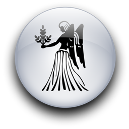
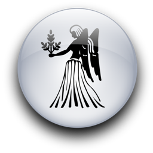

Женщина Дева и Мужчина Водолей
-

 

Водолей-мужчина не торопится принести брачные обеты и способен удрать из-под венца, но дальше этого его эксцентричность не заходит. Кое в чем он даже слегка старомоден.
Дева-женщина не станет соревноваться с ним в чудачествах. Она позаботится о том, чтобы этот сумасброд ходил в чистой рубашке, где все пуговицы на своём месте. Напомнит, как зовут его старинного приятеля, подскажет, кем приходится ему дальний родственник, нагрянувший из провинции. Она станет хорошей матерью его детям. Разделит его интеллектуальные интересы и будет терпеть его друзей. Их отношения содержат зачатки успеха, но над ними надо работать. Причем работать придется ей.
Она слишком вежлива, чтобы попросту выставить тех странных типов, которых он притаскивает домой в самое неподходящее время.
Жена-Дева - это страховой полис. Водолей может нагородить кучу ошибок - она посочувствует и поймет. Она будет терпеливо ухаживать за ним, когда он болен или хандрит. Это ужасное искушение - свалить на нее все проблемы и заботы. Но мы не советуем поддаваться искушению. Даже святой надоест ждать каждый вечер его неожиданного появления или раскрывать ему объятия, когда он соблаговолит заметить ее, бросив что-нибудь вроде "Ты хороша, малышка!". Ей хотелось бы жить с ним в воздушном замке, который построила его сумасшедшая фантазия. (Ведь Девы не так чопорны, как пишут в старинных астрологических книгах.) И он доверил этой женщине стирать его носки, потому что она не насмехалась над его призрачным домом. Но потом он как-то позабыл, что звал ее в заоблачные выси. И она тоскует у лохани с грязной водой, пока он парит в поднебесье.
По правде говоря, половина вины лежит на самой Деве: вольно ей было взваливать на себя все обязанности!
Она уже из последних сил бредет по тропинке долга, заблудившись в дремучем лесу его прихотей. Её подвела чрезмерная лояльность к мужчине, которого она обещала любить - неважно, принесен ли обет перед алтарем или в душе. Вы знаете, как Дева держит обещания. Эту женщину нельзя назвать бессловесной жертвой. Наверное, она жалуется и ворчит. Но Водолей залетает так высоко, что до него можно только докричаться.
Упреки Девы могут образумить Водолея, но ей не стоит перегибать палку. Если она будет чересчур настойчива, попробует "приземлить" его устремления. Безобидный чудак может превратиться в безжалостного, вздорного диктатора. При каждом удобном случае он постарается улизнуть из дома. Водолей - воздушный знак, а все рожденные под таким знаком нуждаются в воздухе, чтобы дышать и парить.
Женщины-Девы очень взыскательны. Нет никаких причин, чтобы физическая сторона этого союза разочаровала любовников. Едва ли она оценит по достоинству все взлеты и зигзаги его неистовой фантазии. Воздух есть воздух, земля есть земля, и друг друга им не понять... Хотя кто знает... Может, ей покажется обворожительным его сумасшествие. Во всяком случае, это будет забавно. Возможно, одна из личин его изменчивой сексуальности принесет ей неожиданно полное удовлетворение.
Водолея наверняка заинтересует ореол таинственности вокруг Девы, он может строить догадки годами, а это его любимое времяпрепровождение.
Ему стоит обуздывать свою тягу к экспериментам, чтобы не оскорбить ее представлений о приличиях: не исключено, что она откажется заняться любовью на лужайке у дома.
Водолей любит задираться, но было бы ошибкой дразнить ее слишком часто. Девы не из тех, кто медлит с разрывом. Они отсекают ненужное с ледяным хладнокровием хирурга. Им нужна постоянная смена впечатлений, свежая пища для допытливого ума. Дева не удовлетворится парой дежурных фраз вроде "Что у нас на обед, малыш?".
Конечно, у Девы свои недостатки. Она бывает маниакально аккуратной и, вместо того, чтобы любоваться звездами в романтическую летнюю ночь, озабоченно собирает пушинки, прилипшие к одежде. Ее повергают в шок сочетание коричневых носков с черными ботинками, что крайне изумляет Водолея, который выше таких мелочей.
Если с ее лица не сходит мрачная гримаса, если она сверх меры пунктуальна и суетлива - это плохие симптомы. Груз, который она на себя взвалила, ей не по силам. Поздний обед на грязной кухне, раздраженная мина при ежевечернем ритуале расчесывания волос (двести прикосновений щеткой) - это сигналы тревоги. Она несчастна и скучает.
В ту их первую встречу он смотрел телевизор, стоя на голове и жуя орехи. Теперь он твердо стоит на ногах, как любой обыватель. Самое время вырвать Деву из обыденности - заказать билеты на самолет в Египет и слетать к великой пирамиде Гиза, чтобы разгадывать ее тайны, стоя на голове в царской комнате или гробнице.